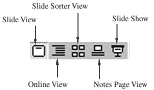
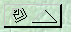
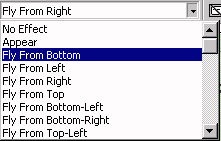

[ Contents ] [ Previous ] [ Next ]


The ability to add and edit objects, along with the ability
to add and delete new slides provides us with the opportunity
to create presentations. A presentation is nothing more than an
organized series of slides. The main problem in developing a presentation
is the order in which the slides are presented.
PowerPoint has made it easy to generate an overview of the
presentation with the use of the Slide sorter. To access the slide
sorter, press the slide sorter button  from
the View option at the bottom left of the screen which looks like
this:
from
the View option at the bottom left of the screen which looks like
this:  . Pressing this key provides you with the
following screen:
. Pressing this key provides you with the
following screen:

This screen displays all of the slides available for viewing and places them in order. The order of the slides can be changed simply by clicking and dragging a cell in front (or on top of ) another slide.
Slides can also be deleted in the Slide Sorter by highlighting
the Slide to be deleted and pressing the delete key or choosing
"Delete Slide" from the "Edit" Menu.
When you are happy with the ordering of the Slides, you can test the presentation by pressing the Presentation icon located at the bottom left of the screen.

.After pressing this button the slide size will enlarge to take
up the entire screen and the slides will be displayed in the order
that you have selected using the Slide Sorter. No menu, title
bar, or toolbars will be displayed on the screen in order to maximize
the size of the slide. To exit the presentation screen, press
the Escape (Esc) button.
There are many optional keys that can move you through the
presentation. Some of these key are briefly described below:
| Key | Function |
|---|---|
| Right Arrow | Moves one Slide Ahead |
| Left Arrow | Moves one Slide Back |
| Down Arrow | Moves one Slide Ahead |
| Up Arrow | Moves one Slide Back |
| Page Up | Moves one Slide Ahead |
| Page Down | Moves one Slide Back |
| Enter | Moves one Slide Ahead |
| Space Bar | Moves one Slide Ahead |
| Esc (Escape) | Exits Presentation |
| Left Mouse Button | Moves one Slide Ahead |
| Right Mouse Button | Moves one Slide Back |
Although many keys are available for navigation, it is recommended that you stick to a simple pair of keys (left arrow/right arrow or page Up/Page Down) to avoid confusion during the presentation.
PowerPoint has a very limited form of annotation that can be
used during the presentation. Annotation is a feature that allows
the presenter to add highlights to an existing slide during the
presentation. The annotation feature can only be accessed using
the mouse.
To begin annotating a slide, look for this button in the bottom left corner of the presentation screen:

. Clicking this button provides you with a menu from which you can choose a variety of tools. One of which, the "Pen" allwos you to annotate the slide. To use the pen, select it from the menu that appears.
to revert back to slideshow control, go back to the menu and select the "Arrow" option.
While annotation can be useful in a presentation, PowerPoint
limits the effect of annotation by erasing all annotation on a
slide when the slide is changed. This means that you do NOT have
the option of saving the notes you have made on the slide.
Another method for improving the impact of your presentation
is to use transition and build effects. Transition effects
are used during the transition from one slide to the next. Build
effects are used in building a single slide. The transition effects
add absolutely no substance, but they do add some sparkle to your
presentation. Build effects are useful for hiding and revealing
only parts of the slide during the presentation to give the "peep
show" effect. Some examples of transition and build effects
include dissolve, wipe down, wipe up, and fly from right/left.
To apply transition or build effects to your slide, you must be in the Slide Sorter screen. To open this screen press the slide sorter button on the bottom left of the screen. The button looks like this:
Once you are in the slide sorter screen look for the toolbar
that is used for the transition and build effects. The toolbar
looks like this:

The default for all presentation is no transition or build
effects.
To apply a transition effect, first select the slide that you
want to apply the effect to by clicking once on the slide. The
selected slide should have a highlighted border around it. Next,
press the drop down arrow on the transition section of the slide
sorter toolbar to produce the following list of transition effects.

To select a transition effect, simply choose one of the options
from the list provided.. Note that you are choosing how the selected
slide will initially be drawn. To check out the
transition, click on the presentation button at the bottom right
of the screen and move through the slides.
Build effects are used for slides with text. Applying build effects allows you to hide bulleted text and "build" the slide slowly, revealing one point at a time. Applying build effects is very similar to the process of applying transition effects. You first must be in the slide sorter view. You then select the slide you want to apply the build effect in and press the drop down box to view the list of build effects. This is shown below:

To apply the build effect, simply select an effect from the
list and then view the presentation to see what happens. You'll
notice that if a build effect has been applied, only the title
of the slide will be displayed as shown below:

To reveal the text one point at a time, press the "Enter"
or Right-arrow key. Pressing this key reveals the next point on
the list as shown below:

The entire slide can therefore be "built" one step at a time (hence the name build effects). Build transitions can add to the substance of the presentation by revealing only the points that the presenter wants to reveal providing the presenter with a tool to focus attention.